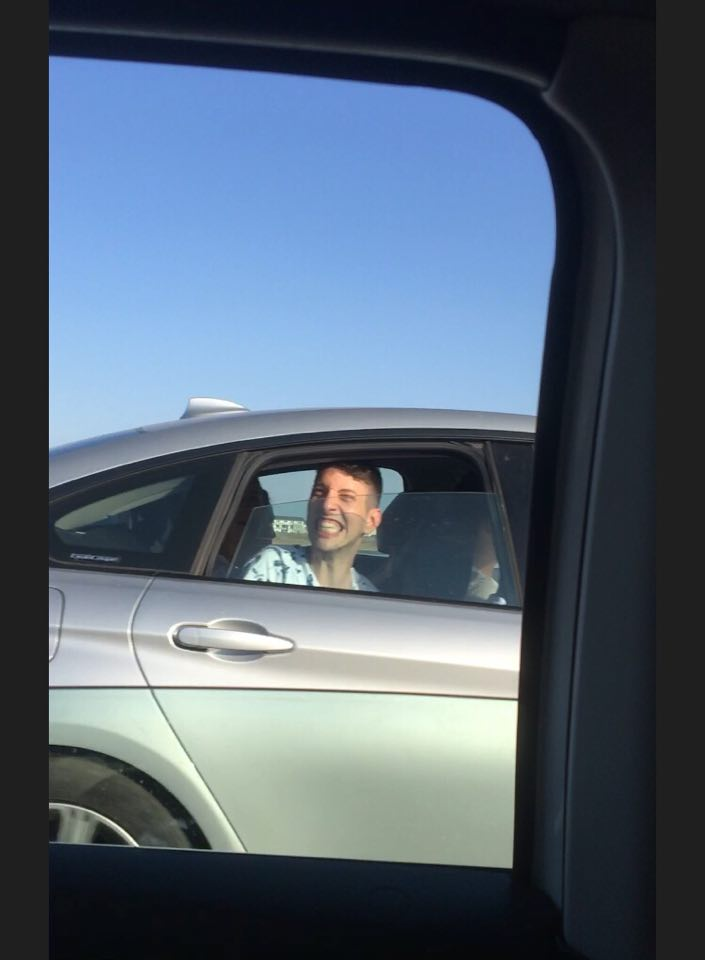

<!-- Scrieti aplicatia HTML5 si codul javascript care la click pe canvas inverseaza imaginea fata de axa OY si reduce la
jumatatea componenta de culoare albastru. -->

<!DOCTYPE html>
<html>
    <body>
        <canvas id="canvas" width="600" height="400" style="border: 1px solid blue; width: 600px; height: 400px;">

        </canvas>
        
    </body>
    <script>
        let img = document.getElementById('img');
        let canvas = document.getElementById('canvas');
        let ctx = canvas.getContext('2d');
        canvas.width=img.naturalWidth;
        canvas.height=img.naturalHeight;
        canvas.addEventListener('click', (e)=>{
            ctx.translate(img.width + 115, 0);
            ctx.scale(-1,1);
             ctx.drawImage(img, 0, 0, canvas.width, canvas.height);
            let imgData = ctx.getImageData(0,0,canvas.width,canvas.height);
            let pixels = imgData.data;
            for(let i = 0; i < pixels.length; i+=4){
                pixels[i + 2] = pixels[i + 2] / 2;
            }
            ctx.putImageData(imgData,0,0);
        })
        
        console.log(canvas.width, canvas.height);

    </script>
</html>